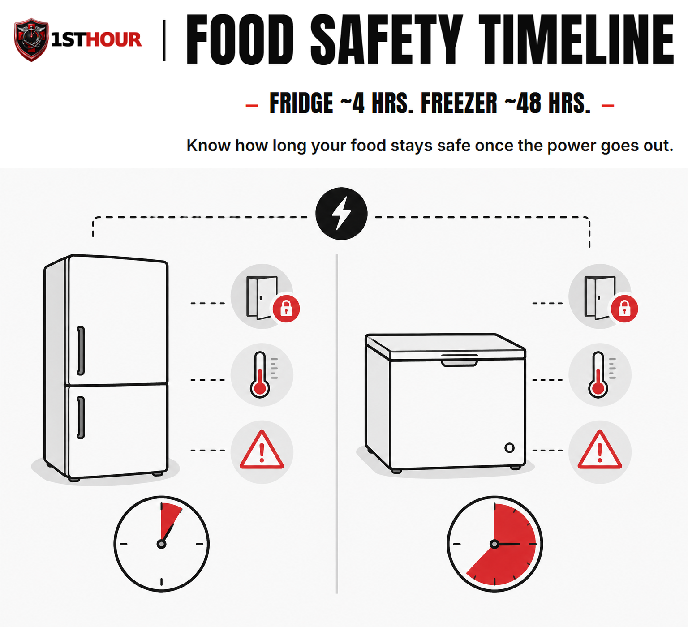
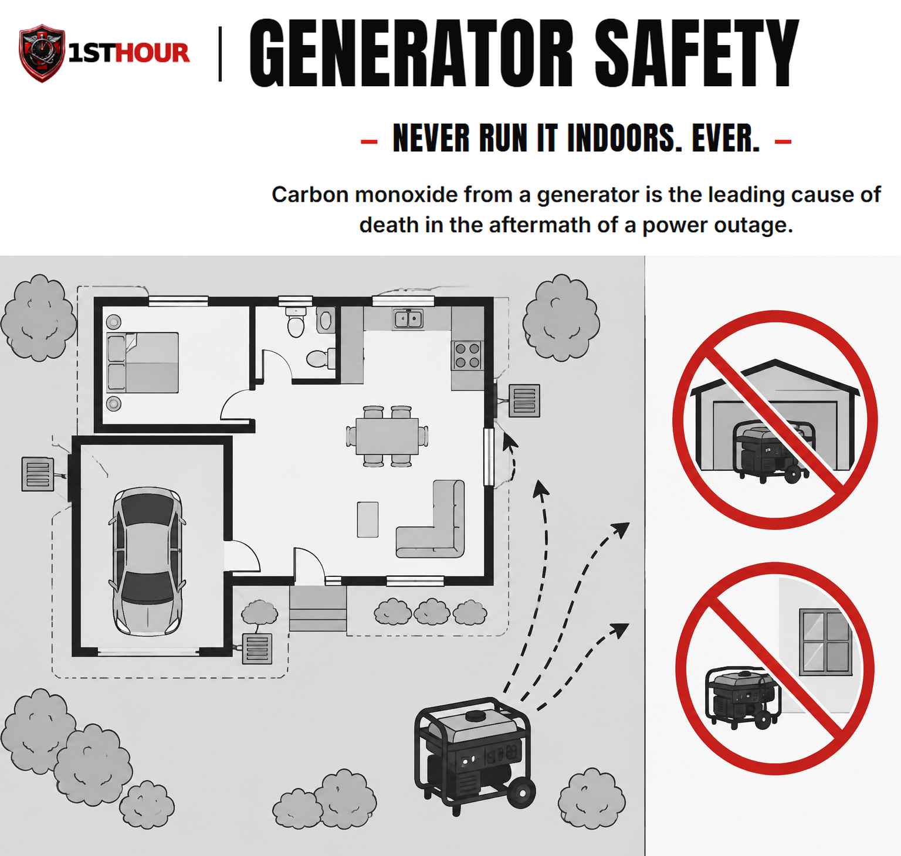

Grid-Down / Extended Power Outage
What to check in the first hour after the power goes out — and how to manage food, water, warmth, and communication for as long as it takes to come back on.
1. Why the First Hour (and Beyond) Matters
Most of this library's protocols are built around a single acute injury — something happens, you respond in the first sixty seconds, and the outcome is largely decided soon after. A power outage is a different shape of emergency entirely. Nobody is bleeding in the first minute. The danger here is slower, quieter, and cumulative — it comes from small decisions in the first hour that compound over the following hours and days: whether you open the freezer "just to check," whether you run a generator somewhere that seems reasonable at 2 a.m., whether you assume the power will be back "any minute now" and skip basic preparation as a result.
The average U.S. power outage is resolved in a few hours. But a meaningful share run much longer — a severe storm, a grid failure, or damage to transmission infrastructure can knock out power for a day, several days, or in rare cases over a week. This protocol is written for that uncertainty: what to do in the first hour assuming you don't know yet how long it will last, and how to carry that first hour's decisions into a realistic multi-day posture if it comes to that.
2. The First-Hour Checklist
Work through this list as soon as you realize the power is out — before you decide it's "probably nothing." Most items take seconds and cost nothing if power returns quickly.
- Check whether it's just you. Look for lit windows at neighboring homes, or check your utility's outage map on a phone (cell data often still works even when home Wi-Fi/internet is down). A single-house outage may be an internal electrical problem, not a grid event — different response, possibly urgent (a tripped main breaker, a downed line on your own property).
- If you smell gas or see sparking, downed lines, or damage near your home's electrical service, get everyone out immediately without operating any light switch, phone, doorbell, or anything else that could spark, and call 911 or your utility's emergency line from outside before doing anything else on this list. Do not touch a downed power line or anything it's touching, ever, for any reason.
- Check your main breaker panel. If only part of your home lost power, a tripped breaker or a blown fuse may be the actual cause — reset it once, and if it trips again immediately, stop and call an electrician rather than resetting repeatedly.
- Unplug or power down sensitive electronics (computers, TVs, routers) to protect them from a power surge when service is restored. Leave one lamp switched on so you'll notice when power returns.
- Check on powered medical equipment in the home — oxygen concentrators, CPAP machines, powered wheelchairs, home dialysis or infusion equipment. Confirm battery backups are active and note how much runtime is left. See Section 9 for medically-dependent household planning in depth.
- Check sump pumps and well pumps. A sump pump without backup power stops protecting a basement from flooding the moment the outage starts; a well pump means no running water at all until power returns or a generator is running one safely (Section 5). If flooding risk is real and you have no battery/generator backup, this may be the single most time-sensitive item on this list.
- Keep the refrigerator and freezer closed. Don't open them "to check" — every open door resets the clock on Section 3's hold times. Note the time the outage started so you can track it.
- Locate flashlights, a battery or hand-crank radio, and your phone charger/power bank before it gets dark or you need them, not after.
- If you have a generator, do not set it up yet without reading Section 5 in full first — this is the highest-stakes decision in this entire book.
3. Food Safety Timeline
Food safety during an outage comes down to time and temperature, not how the food looks or smells. Bacteria that cause foodborne illness grow fastest between 40°F and 140°F — the "danger zone" — and a warm kitchen sits well inside that range within hours of losing power.
Refrigerator
Safe hold time if the door stays closed. After that, perishables (meat, dairy, eggs, leftovers, cut produce) should be treated as unsafe unless you've confirmed the internal temperature is still 40°F or below with a thermometer.
Freezer (full)
Safe hold time if the door stays closed and the freezer was full. A half-full freezer holds roughly 24 hours instead — more air inside means less thermal mass to keep things cold.

How to tell if food is still safe
- Use a food thermometer, not your senses. Bacteria that cause serious illness typically don't change the taste, smell, or appearance of food — "it still looks fine" is not a safety test.
- Refrigerated perishables (meat, poultry, fish, eggs, milk, soft cheese, leftovers, cut fruit/vegetables) held above 40°F for more than about 2 hours total should be discarded, whether or not the outage itself lasted 2 hours — track cumulative time above 40°F, not just outage duration.
- Frozen food that still has ice crystals and is 40°F or below can be safely refrozen or cooked. Food that has thawed completely and sat above 40°F for more than 2 hours should be discarded.
Keep a thermometer inside both the fridge and freezer year-round (an inexpensive appliance thermometer, not the built-in digital display, which loses power along with everything else) so you have an actual reading to check against these numbers rather than a guess.
4. Water Storage & Purification
Most outages don't affect your water supply directly — but a well pump needs electricity, and municipal water systems can lose pressure or issue a boil-water notice if treatment plants or pumping stations lose power during a widespread or prolonged event. Plan for both possibilities.
How much stored water is enough
The standard planning figure is one gallon per person per day, covering drinking and basic hygiene, with a minimum three-day (72-hour) supply for a short-duration event and a two-week supply as a more resilient target if you have the storage space. A family of four planning for two weeks needs roughly 56 gallons — bulky, but a realistic target to build toward gradually rather than all at once.
- Store it before you need it, in food-grade containers, away from direct sunlight and any chemicals or fuel. Commercially bottled water doesn't need special treatment; water you store yourself in reused containers should be rotated roughly every six months.
- Fill a bathtub or large containers as soon as an outage starts if you're on a well or your area is prone to pressure loss — this buys you non-potable water for flushing toilets and washing even before you touch your stored drinking water.
If the water supply itself is affected
- Follow any official boil-water notice exactly — check a battery-powered radio (Section 6) or your utility's alerts, since a boil-water notice specifically means the normal treatment process may have been compromised, not just that pressure is low.
- Boiling is the most reliable purification method available at home. Bring water to a rolling boil and hold it there for one full minute (three minutes at elevations above roughly 6,500 feet, where water boils at a lower temperature) to kill bacteria, viruses, and parasites.
- If boiling isn't possible, unscented liquid household chlorine bleach (6–8.25% sodium hypochlorite, no added scents, thickeners, or dyes) can disinfect water — follow the ratio and wait time printed on the product label or your local health department's guidance exactly, since concentrations vary by product.
- A portable water filter rated for bacteria and protozoa (look for an EPA/NSF-certified purifier rating) is a reasonable addition to a kit, but check its specific certification — many camping-style filters remove bacteria and parasites but not viruses, which matters more for surface water than typical municipal-supply contamination.
5. Generator Safety
Never run a generator:
- Indoors, anywhere in the home — not in a basement, not in a room with the windows open, not "just for a minute."
- In a garage, carport, or shed — even with the door fully open. An open garage door does not ventilate a generator's exhaust fast enough; CO can still accumulate to lethal levels inside the garage and drift into the attached house.
- Near any window, door, or vent — including your own, and including a neighbor's, if you're close enough for exhaust to drift toward either home. CO travels through open windows and vents from outdoors and will accumulate indoors even when the generator itself is physically outside.
- Under any structure attached to the home, including a covered porch, breezeway, or carport that shares airflow with the house.
Safe placement — every time:
- Place the generator outdoors, in the open air, at least 20 feet from your home in every direction, and at least 20 feet from any neighboring structure — further if wind is blowing exhaust toward a building.
- Point the exhaust away from your home and any windows, doors, or vents — yours or a neighbor's.
- Never run it under an awning, tarp, or any covered structure even if it's freestanding and outdoors — exhaust needs to disperse into open air, not collect under a roofline.
- Install battery-powered or battery-backup carbon monoxide detectors inside your home — on every level, and specifically near sleeping areas — and test them before you ever need them. A CO detector is not optional equipment if you own or might ever use a generator.
- If a CO alarm sounds, get everyone outside into fresh air immediately and call 911 — do not go back inside to search for the source or open windows first.

Other generator safety basics
- Let the generator cool before refueling it. Gasoline spilled on a hot engine or exhaust system can ignite.
- Store fuel outside the living space, in approved containers, away from any ignition source.
- Keep the generator dry and never operate it in rain or standing water — electrocution is a real secondary risk alongside CO.
- If you're connecting a generator to your home's electrical system (a "backfeed" setup) rather than running extension cords directly to appliances, it must go through a properly installed transfer switch, installed by a licensed electrician, before an outage happens — an improperly connected generator can feed power back into utility lines and electrocute line workers repairing the outage, in addition to fire risk. Never attempt to backfeed a home's wiring by plugging a generator into a regular wall outlet.
6. Heat & Cold Management Without Power
Losing climate control is uncomfortable in mild weather and dangerous in extreme heat or cold, especially for infants, older adults, and anyone with a chronic medical condition. The approach differs by season, but one rule carries over directly from Section 5: any fuel-burning heat source has the exact same carbon-monoxide risk as a generator and needs the exact same never-indoors rule.
Staying warm without power
- Layer clothing and bedding rather than relying on a single heat source — trapped air insulates better than one thick layer.
- Close off and gather in one small room rather than heating the whole house — body heat and a closed door make a meaningful difference in a well-sealed small space.
- Battery-powered or rechargeable heated blankets and hand/foot warmers are safe indoor options and carry no CO risk, unlike any combustion source.
- Never use a gas stove or oven to heat a room, ever, for any reason — this is a leading cause of indoor CO poisoning during outages specifically because it feels like an obviously available option. Never use a charcoal or propane grill indoors, in a garage, or on an enclosed porch for the same reason as Section 5's generator rule — grills produce CO just like generators do.
- A fireplace or wood stove that was already a permanent, code-compliant, professionally installed fixture in the home before the outage — never one set up or improvised during one — is different from every other heat source in this list. It still needs a working CO detector nearby and a clear, unblocked flue, and it is never an excuse to bring a generator, grill, or camp stove indoors.
Staying cool without power
- Move to the lowest level of the home, where it's naturally cooler, and close blinds/curtains on sun-facing windows during the day.
- Battery-powered fans help even without air conditioning — moving air increases evaporative cooling from the skin.
- Stay hydrated and avoid exertion during the hottest part of the day. Heat illness risk climbs quickly for infants, older adults, and anyone without working AC for more than a few hours in genuinely hot weather — consider relocating to an air-conditioned public space (see Section 8) rather than waiting it out if the heat is severe.
- Cool, damp cloths on the neck, wrists, and forehead help manage heat stress in the meantime.
7. Communication When Cell Towers Are Down
Cell towers typically have their own battery backup, but it's usually good for only a few hours under normal load — and a widespread outage puts far more load on the towers that are still up as everyone in the area tries to use them at once. Plan for cell service to become unreliable during an extended outage, not just your home's own power.
- Texts often get through when calls don't. A text message is a small amount of data sent once; a voice call needs a continuous connection. If calls are failing, try a text before assuming you have no signal at all.
- A battery or hand-crank emergency radio with NOAA weather-band reception is the most reliable way to get official information when data networks are overloaded or down — this should already be in your kit per Section 2's first-hour checklist.
- Agree on a check-in plan with family before an emergency happens, not during one: an out-of-area contact everyone calls/texts (an out-of-area number is often easier to reach than trying to call within the affected area directly), and a physical meeting point if home isn't reachable or safe.
- Conserve phone battery — lower screen brightness, close unused apps, and switch to airplane mode between check-ins to reduce the battery drain of your phone repeatedly searching for a weak signal.
- A car's battery and alternator can charge phones for a meaningful amount of time if you have fuel — but never run a vehicle in an enclosed garage to do this, for the exact same CO reason as Section 5.
8. Shelter vs. Relocate
Most outages are safest to simply wait out at home. But there's a real decision point past which staying stops being the safer option, and it's worth thinking through before you're tired, cold, or hot and making the call under pressure.
Factors that push toward relocating
- Medical equipment dependency that can't be sustained on remaining battery/generator capacity — don't wait until a device is about to fail; move before that point, per Section 9.
- Extreme heat or cold that your home can no longer safely buffer, especially with infants, older adults, or anyone medically vulnerable in the household.
- Food and water reserves running out with no restoration timeline in sight.
- Structural safety concerns — storm damage, standing water, a compromised roof, or anything that makes the home itself unsafe independent of the power loss.
- No realistic restoration estimate from your utility, or an estimate measured in many days rather than hours.
If you decide to relocate
- Go to a known safe destination — a relative's home with power, a hotel, or an official shelter opened by local emergency management (check the battery radio from Section 7 for shelter locations and openings).
- Bring medications, medical equipment and its chargers, identification, and this book's Essential Items Checklist (Section 10) — treat it as a grab-and-go list, not just an at-home reference.
- Tell your out-of-area contact where you're going before you lose the ability to communicate it.
- Shut off water and unplug remaining electronics before leaving, the same as you would before any extended absence.
9. Special Situations
Households with medically dependent members
If anyone in your home depends on powered medical equipment — oxygen concentrators, CPAP/BiPAP machines, home dialysis, infusion pumps, powered mobility devices — or on medication that requires refrigeration (insulin is the most common example), plan for this specifically before an outage, not during one:
- Know your equipment's battery backup runtime exactly, and register with your utility's medical-priority/critical-care customer program if one exists — many utilities restore priority accounts faster and provide outage-specific notifications.
- Have a plan for where to go if backup power runs out before service is restored, and don't wait until the last minute of battery life to start moving.
- Refrigerated medication can typically tolerate a closed cooler with ice packs for a limited window — check the specific medication's insert or ask a pharmacist in advance for how long, since this varies by drug.
Households with infants or older adults
Infants and older adults regulate body temperature less effectively than a healthy adult and dehydrate or overheat faster. Prioritize climate management (Section 6) and hydration for these household members first, and set a lower personal threshold for deciding to relocate (Section 8) rather than waiting to see how they tolerate it.
Checking on neighbors
A widespread outage affects your whole street, not just your household — a quick, safe check on elderly or medically vulnerable neighbors costs little and can catch a problem (a failed medical device, no heat/cooling, no water) before it becomes an emergency for someone without the resources to reach out themselves.
10. Essential Items Checklist
Everything in this protocol assumes certain supplies are already in the home before an outage starts. Build this list out gradually if you don't have it all yet — even a partial kit is far better than none.
- Battery or hand-crank emergency radio (NOAA weather-band) — Section 7. Your most reliable information source when cell networks are overloaded.
- Flashlights and spare batteries — Section 2. Check these first, before it gets dark.
- Battery-powered carbon monoxide detector — Section 5. Non-negotiable if you own or might use a generator or any fuel-burning heat source.
- Stored water (1 gal/person/day, 3-day minimum) — Section 4. Store it before you need it.
- Appliance thermometers (fridge & freezer) — Section 3. The only reliable way to verify food safety after an outage.
- Portable phone chargers / power banks — Section 7. Charge these before an outage, not during one.
- Portable generator, stored fuel, and a transfer switch (if applicable) — Section 5. Set up the transfer switch by a licensed electrician before an outage, never during one.
- Non-electric water purification method (bleach or a certified filter) — Section 4. Backup if boiling isn't possible.
- Battery-powered fans and/or rechargeable heated blankets — Section 6. Climate management with zero CO risk, unlike combustion sources.
- Spare medication supply and equipment battery backups — Section 9. Coordinate with your pharmacist/provider in advance, not during an outage.
11. Climate & Regional Notes
Unlike most books in this library, geography genuinely changes the urgency of a grid-down event here — but by climate zone, not by a state-by-state legal grid the way Good Samaritan protections vary. A power outage in Phoenix in July and one in Minneapolis in January are both dangerous, but for opposite thermal reasons, and the same generator/CO rules apply everywhere regardless of climate.
Heat-Risk Regions
Southern, Southwestern, and Gulf Coast states face the sharpest risk from losing air conditioning during summer heat — heat illness can develop within hours for infants, older adults, and anyone medically vulnerable. Set a lower personal threshold for relocating to an air-conditioned space (Section 8) in these regions during summer outages, and prioritize hydration and cooling (Section 6) immediately.
Cold-Risk Regions
Northern, Upper Midwest, and mountain-region states face the sharpest risk from losing heat during winter — hypothermia risk climbs quickly in a home that can't hold heat, and this is exactly where the temptation to bring a generator or grill indoors "just this once" is strongest and most dangerous (Section 5). These regions should treat CO detector coverage and layering/insulation (Section 6) as higher priority, not lower, precisely because the cold makes an unsafe shortcut more tempting.
Whichever climate zone you're in, the practical takeaway is the same: match your preparation to your region's dominant seasonal risk, but never treat climate severity as a reason to relax the generator/CO rules in Section 5 — those apply identically everywhere, regardless of how cold or hot it is outside.
12. When Things Escalate
Most outages resolve without incident. A smaller number turn into something more serious than "wait it out." Watch for these signs that the situation has moved past routine:
- Structural damage to the home from the same event that caused the outage (storm, fire, flooding) that makes staying unsafe independent of the power loss itself.
- No realistic restoration timeline from your utility, or a timeline that keeps extending well past what your food, water, and medical-equipment reserves can cover.
- A medical emergency arising from the conditions — heat illness, hypothermia, a CO exposure, a medical-equipment failure. Call 911 immediately; don't wait to see if the person "shakes it off," and don't let the outage itself (blocked roads, unreachable landlines) delay that call — try every available channel (cell, text, a neighbor's working phone or radio).
- Signs of carbon monoxide exposure in anyone in the household — treat this as the emergency it is per Section 5's callout, every time, without waiting to "see if it passes."
When in doubt about whether your situation still counts as "routine," treat it as the more serious case. The cost of an unnecessary 911 call or an unnecessary relocation is far lower than the cost of waiting too long on a genuine emergency.
13. Medical Disclaimer
This guide is for general educational purposes only and does not constitute medical advice, diagnosis, or treatment, emergency management guidance, or legal advice. It is not a substitute for professional medical care, emergency medical services, your local emergency management agency's official guidance, or a certified first aid, CPR, or emergency-preparedness course, which we strongly recommend taking in person.
In any real emergency, call 911 (or your local emergency number) immediately. Nothing in this guide should delay that call.
Generator, carbon monoxide, and electrical safety guidance in this book reflects general best practices (consistent with CDC and Ready.gov consumer guidance) but does not replace your specific equipment's manufacturer instructions, a licensed electrician's guidance for any permanent generator connection, or your local fire code.
1st Hour and its parent company make no warranty, express or implied, regarding outcomes from applying the information in this guide, and disclaim liability for actions taken based on its contents to the fullest extent permitted by law.
Editor's note: this edition reflects content as of August 24, 2026. 1st Hour periodically revises protocol guides as best practices evolve — visit 1sthourprotocols.com/grid-down for the current edition and to re-download the latest PDF.